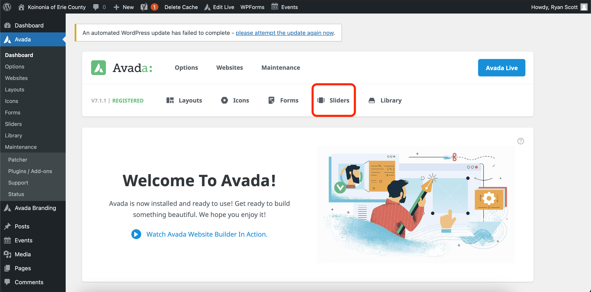
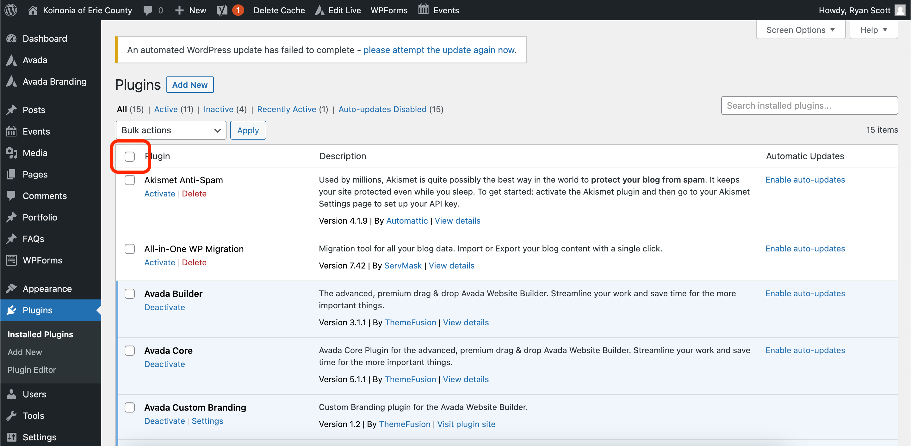
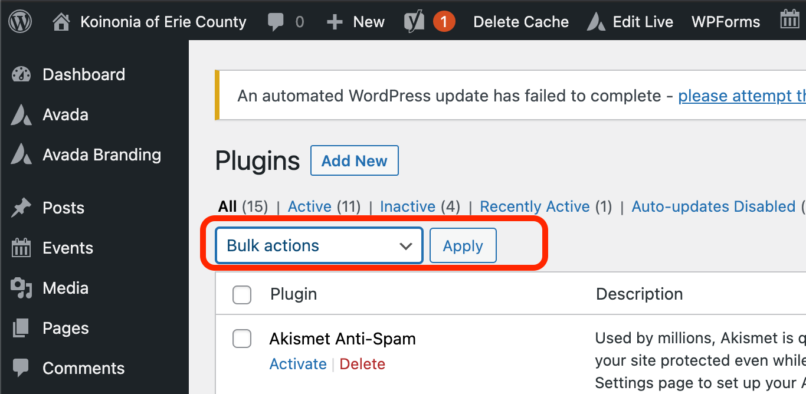

Adding/Editing Testimonials
The Koinonia website makes use of a stored database of all testimonials. On nearly every page, the site dynamically pulls in all testimonials and displays them for a set amount of time. In order to edit/add to the testimonials:
- Navigate to www.koinoniaerie.org/wp-admin
- Once logged into, click on "Avada" on the grey sidebar.
- Hover over Sliders

- Select Sliders, not Sliders
- To edit, click any of the slides. To edit the text, change the content in the "caption area" box
- To add new testimonials, hover over an existing testimonial on the slides page and select "Duplicate this"
- The page will refresh and a new slide will be created. It will likely be the top option and say "Draft" next to it.
- Click the newly created slide.
- Scroll to the "caption area" box and type in the testimonial in quotes.
- Scroll to the top of the page, and locate the publish button towards the right of the screen.
- Press Publish.
Adding FAQs for the Member Section
The Member Section features a series of question and answers that can easily be edited from the WordPress Dashboard by using the following steps:
Edit Existing
- Navigate to www.koinoniaerie.org/wp-admin
- Once logged into, click on "FAQs" on the grey sidebar.
- To edit an existing question, locate the question by using the page navigation on the bottom right of the site.
- Once the question one wants to edit is found, click the question text.
- The large text on top under "Edit FAQ Post" holds what is displayed on the page. The large text block underneath this section is what is displayed once a website user click on a question.
- After making the needed edits, click update on the right side to save changes and push them to the frontend of the site.
Add New
- Navigate to www.koinoniaerie.org/wp-admin
- Once logged into, click on "FAQs" on the grey sidebar.
- Click "Add New" towards the top next to "FAQs"
- The title is suitable for the question/what one wants to be displayed. The large, white text block beneath this section is where the answer will go/what is revealed once a user selects a question.
- After adding a question and answer, it is crucial to locate "FAQ Categories" on the right of the screen and click "Member"
- Scroll back to the top and locate the blue publish button on the right of the screen.
Adding/Editing Music
The Members Section features a series of song lyrics for the organization. These are stored in the backend of the system as FAQs, despite them being music lyrics.
Edit Existing
- Navigate to www.koinoniaerie.org/wp-admin
- Once logged into, click on "FAQs" on the grey sidebar.
- To edit an existing music piece, locate the title by using the page navigation on the bottom right of the site.
- Once the music piece one wants to edit is found, click the music name text.
- The large text on top under "Edit FAQ Post" holds what is displayed on the page. The large text block underneath this section is what is displayed once a website user click on a music (lyrics).
- After making the needed edits, click update on the right side to save changes and push them to the frontend of the site.
Add New
- Navigate to www.koinoniaerie.org/wp-admin
- Once logged into, click on "FAQs" on the grey sidebar.
- Click "Add New" towards the top next to "FAQs"
- The title is suitable for the name of the song. The large, white text block beneath this section is where the lyrics will go/what is revealed once a user selects a song.
- After adding a song name and lyrics, it is crucial to locate "FAQ Categories" on the right of the screen and click "Music" to ensure it will be added to the right part of the website.
- Scroll back to the top and locate the blue publish button on the right of the screen.
Member Section
The Member Section of the site can be accessed by clicking the "Member Login" button on the frontend of the site. It uses the same password for the old Koinonia site and all users share the same login information. In order to hide the pages, it makes use of a plugin called "Content Control" that restricts certain pages from public view and allows any user that logins with a username and password access to them. Control Control is accessible by hovering over settings on the grey sidebar on the Dashboard and selecting "Content Control."
Adding New Member Logins
- Navigate to www.koinoniaerie.org/wp-admin
- Once logged in, click on "Users" in the grey sidebar
- All users will be displayed in a table on this page.
- To add a new user, click the "Add New" Button in the top left of the screen.
- A form to enter in user information will now be displayed. Input username and email, and save the password for later or change it to something easier here, after clicking “Show Password”.
- To give a users read only access to the Member Section (in other words, they can only view the Member Section and are not allowed to edit content), select the "Subscriber" role.
- Once you are completed inputting information, click the “Add New User Button”
Updating the Directory
Koinonia's website has a member directory feature that allows for logged in members to search other people via their name, church, and K#. The directory is created using the plugin "Participants Database."
Adding New Members
- Navigate to www.koinoniaerie.org/wp-admin
- Once logged in, click on "Participants Database" in the grey sidebar towards the bottom.
- This will display all active users and allow for administrators to search users in more specific ways than the traditional members have access to.
- To add users, click "Add Participant" in the grey sidebar on the right.
- If you prefer to enter info using an Excel file, you can follow the direction under the "import CSV File"
- Fill out the information for the user as desired/available. You may skip the personal info section and only enter the participant info.
- Click Submit, Apply, or Next depending on what you wish to do following the abilities of each as displayed underneath the respective buttons.
Changing Content that is Displayed to all Members
If you wish to add or remove personal information that is displayed to the members (such as adding address information) you may do the following:
- Navigate to www.koinoniaerie.org/wp-admin
- Once logged in, click on "Participants Database" in the grey sidebar towards the bottom.
- To edit displayed fields, click "Manage List Columns" in the grey sidebar on the right.
- Under Public List Column Setup, you can drag and drop different fields from the available fields section to the list column area. All fields that are in the list column area will be displayed to the members.
Updating WordPress Plugins
You may have to update your website from time to time, and it is important to keep your plugins/resources updated. For themost part, you should be able to operate the site without updating any plugins but there are inherent security risks with usingout of date software.
- Navigate to www.koinoniaerie.org/wp-admin
- Once logged in, click on "Plugins" in the grey sidebar towards the bottom.
- The plugins page will now be displayed.
- In most cases, click the blank check mark box on the top of the table.

- Then click the “Bulk Actions” drop down box above the table
- Then select “Update” from the drop down box, and click the “Apply” button

- It may take a few minutes to update / respond. The table will reflect if an update has occurred
- You have now successfully updated your website plugins!